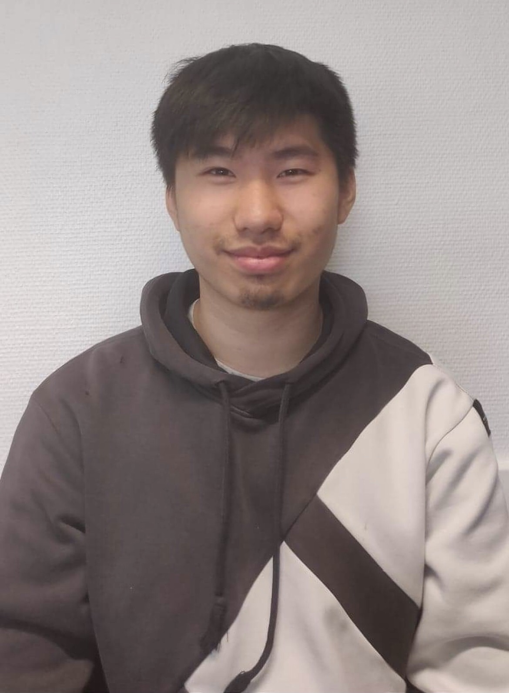
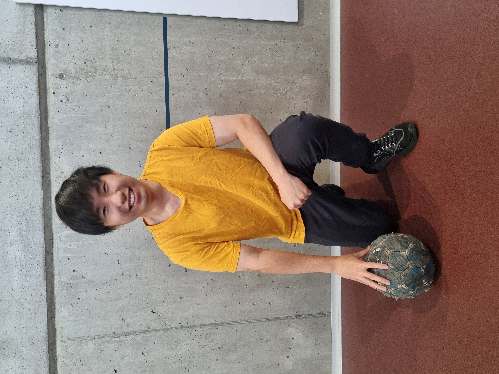
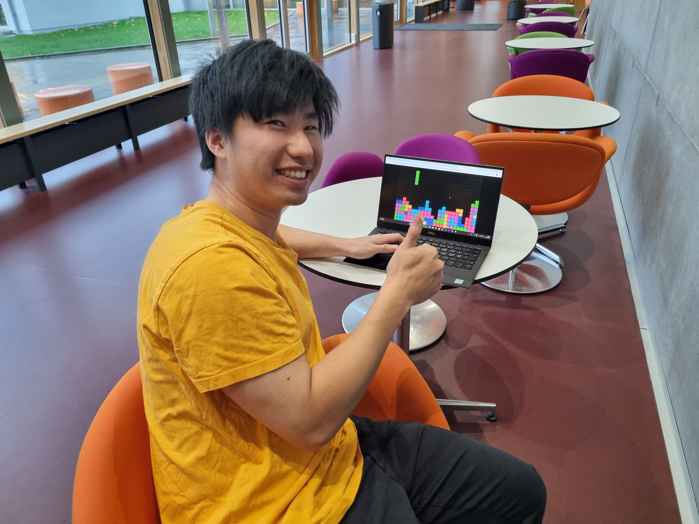
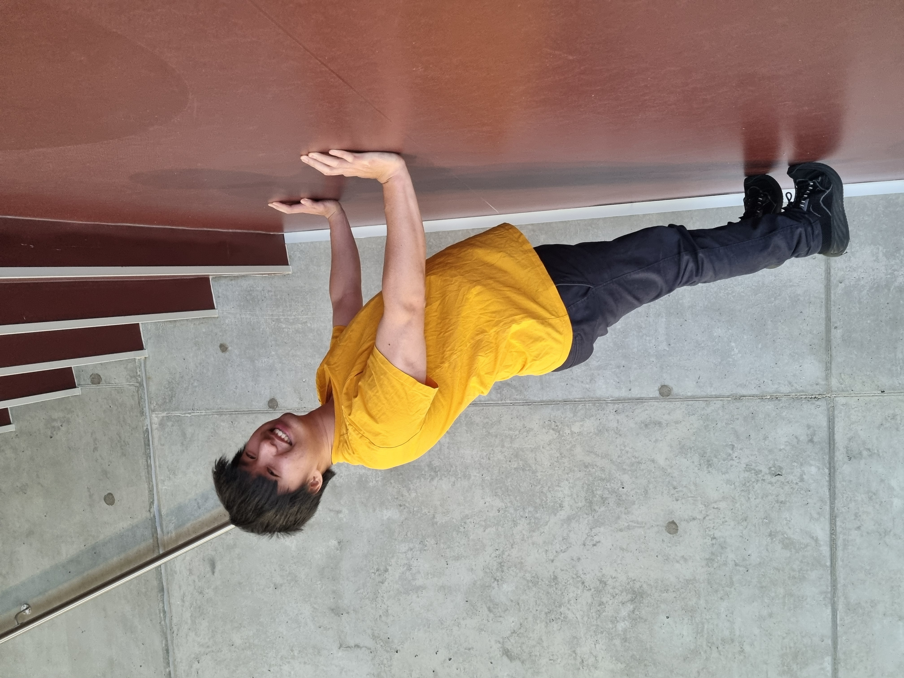

Jan Quoc Tran
Tidligere uddannelse: Handelsskolen, EUC Nord
Aalborg, Danmark
Jeg er 23 år, bor i Aalborg, og har interesse for design og kreative projekter. Gennem mine studier har jeg opnået erfaring med UX/UI design, front-end og projektbaseret samarbejde.
Mit fokus i projekter er altid at komme hele vejen rundt at forstå både idé, design og udførelse. Det er den tilgang, jeg ønsker at holde fast i fremover, fordi den giver mening og skaber bedre resultater.
Faglige kompetencer
Hobbyer

Fodbold
Jeg har spillet fodbold siden jeg var helt lille. Som midtbanespiller elsker jeg at jagte bolden, skabe spil og score indimellem. Jeg er stor fan af Real Madrid og Manchester City, og fodbold har altid været noget, jeg virkelig engagerer mig i.

Gaming
Gaming spænder bredt, fra hurtige Tetris-udfordringer til samler- og chancebaserede gacha games som Wuthering Waves, og dybt fortællende story-based spil som Expedition 33, der fokuserer på narrativ og karakterudvikling.

Fitness
Træning har altid været en del af min hverdag, især cardio og styrketræning, som holder mig i form og styrker både krop og sind. Det giver energi, fokus og balance, og gør det lettere at tackle hverdagens udfordringer.
Styrker
Som jeg er beskrevet ud fra andre:
Ud fra mit sociale netværk har folk beskrevet mig som værende
respektfuld og en person med
god humor.
Jeg er en meget ærlig og rolig person, hvis jeg
bliver spurgt ind til min mening.
Svagheder
Som jeg er beskrevet ud fra andre:
- “Ikke give mig selv nok ‘credit’.”
- “Du er rigtig god, men du føler tit de ting du gør, ikke er godt nok.”
- “Du tager tingene meget på dig, hvis folk f.eks. ikke har samme tempo som dig”.
Interesseret i et samarbejde?
Se Kontakt side